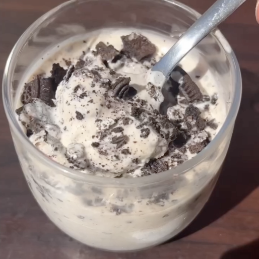

McFlurry
Ingredientes:
- 50 yogur
- 150 nata
- Esencia de vainilla
- 40 leche polvo
- 30 eritritol
- esencia de vainilla
- 2 oreos sin azúcar para triturar y 1 para decorar
Instrucciones:
- En licuadora, añadir yogur, nata, leche en polvo, endulzante, vainilla
- Pasar mezcla al molde para cubos de hielo
- Congelar molde por 4 horas
- Volver a triturar cubos oreos